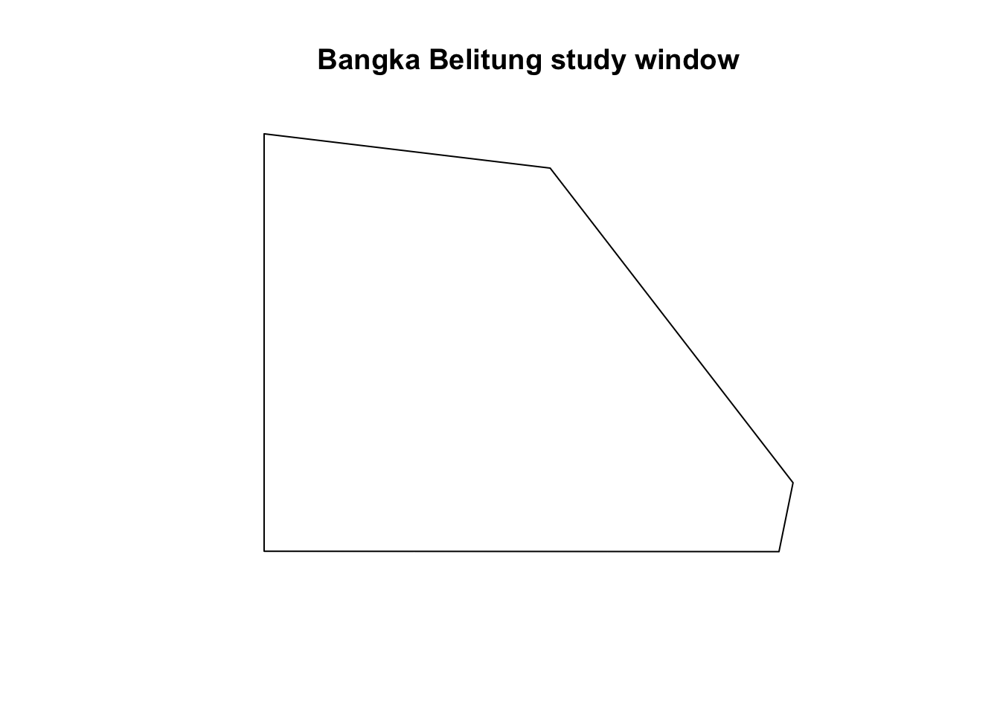
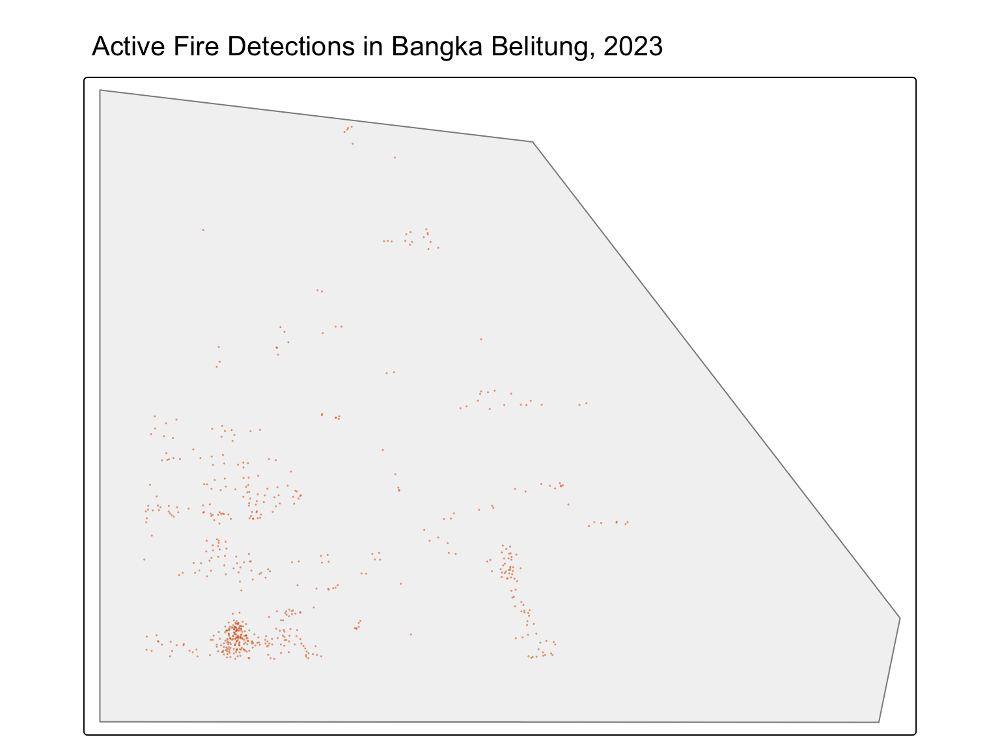
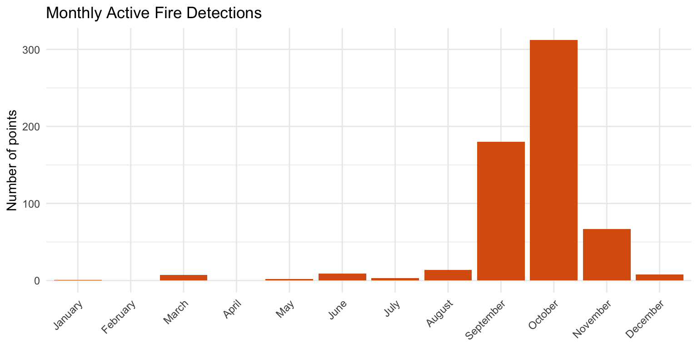
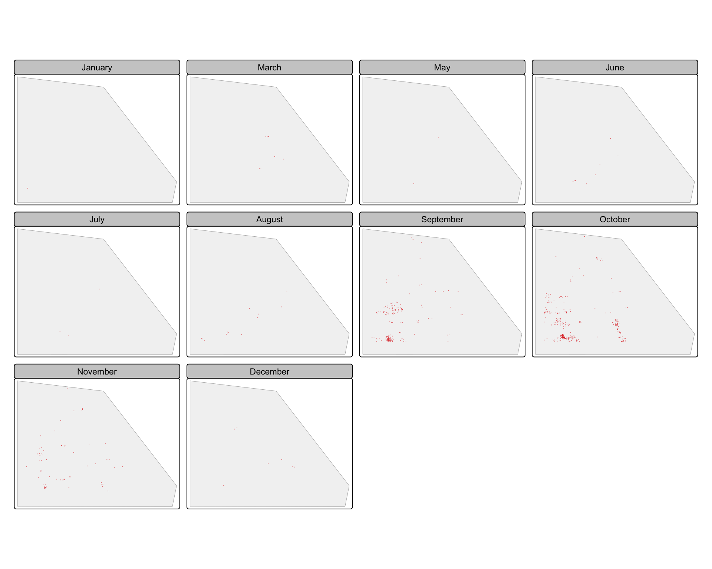
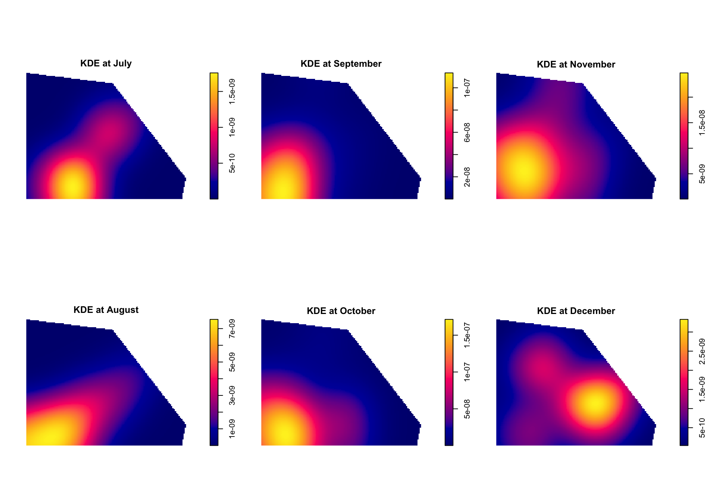
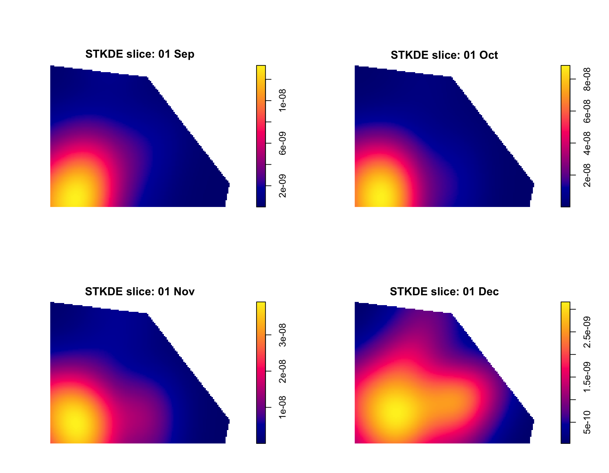
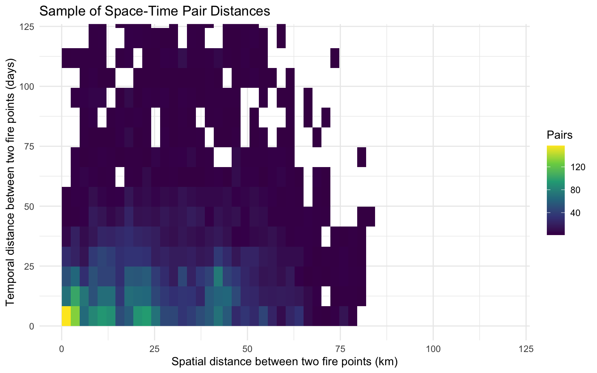

library(sf)
library(spatstat)
library(tmap)
library(tidyverse)
library(lubridate)
library(knitr)
library(rnaturalearth)
set.seed(1234)
tmap_mode("plot")Hands-on Exercise 3: Spatio-Temporal Point Patterns Analysis
Overview
This page follows Chapter 6: Spatio-Temporal Point Patterns Analysis.
The chapter studies forest fire points in Kepulauan Bangka Belitung, Indonesia. To keep the data size small, I use a light subset of Indonesia 2023 active fire detections and only keep the records around Bangka Belitung.
The main question is simple:
- Are fire points randomly distributed in space and time?
- If not, where and when do they cluster?
Note
The full chapter uses sparr::spattemp.density() and stpp. For this submission, I use a lighter spatstat workflow so the page can render reliably. The idea is the same: combine point locations with their event time.
Getting Started
Load Packages
tibble(
package = c("sf", "spatstat", "tmap", "tidyverse", "lubridate", "rnaturalearth"),
version = c(
as.character(packageVersion("sf")),
as.character(packageVersion("spatstat")),
as.character(packageVersion("tmap")),
as.character(packageVersion("tidyverse")),
as.character(packageVersion("lubridate")),
as.character(packageVersion("rnaturalearth"))
)
) %>%
kable()| package | version |
|---|---|
| sf | 1.1.0 |
| spatstat | 3.6.2 |
| tmap | 4.2 |
| tidyverse | 2.0.0 |
| lubridate | 1.9.5 |
| rnaturalearth | 1.2.0 |
sf is used for spatial data. spatstat is used for point pattern objects and KDE. tmap is used for map display.
Data Used
data_used <- tibble(
data_type = c("Geospatial", "Aspatial"),
file = c(
"Indonesia country boundary, clipped to Bangka Belitung area",
"Indonesia 2023 active fire detections, filtered to Bangka Belitung area"
),
path = c(
"rnaturalearth::ne_countries(country = 'Indonesia')",
"data/aspatial/indonesia_fires_2023_bangka_belitung.csv"
),
source = c(
"Natural Earth through rnaturalearth",
"NASA FIRMS data, light CSV subset"
)
)
kable(data_used)| data_type | file | path | source |
|---|---|---|---|
| Geospatial | Indonesia country boundary, clipped to Bangka Belitung area | rnaturalearth::ne_countries(country = ‘Indonesia’) | Natural Earth through rnaturalearth |
| Aspatial | Indonesia 2023 active fire detections, filtered to Bangka Belitung area | data/aspatial/indonesia_fires_2023_bangka_belitung.csv | NASA FIRMS data, light CSV subset |
I do not use the full Indonesia fire data in the report. The saved CSV only contains points near the study area.
Part 1: Importing and Preparing Study Area
The study area is Bangka Belitung in Indonesia. I use the Indonesia country outline from Natural Earth and crop it to the Bangka Belitung bounding box.
Create Study Area Boundary
kbb_bbox <- st_as_sfc(
st_bbox(
c(
xmin = 105.05,
ymin = -3.20,
xmax = 106.95,
ymax = -1.40
),
crs = 4326
)
)
indonesia <- ne_countries(
country = "Indonesia",
scale = "small",
returnclass = "sf"
)
indonesia_utm <- st_transform(st_make_valid(indonesia), 32748)
kbb_bbox_utm <- st_transform(kbb_bbox, 32748)
kbb_area <- suppressWarnings(
st_intersection(indonesia_utm, kbb_bbox_utm)
) %>%
st_geometry() %>%
st_union() %>%
st_make_valid()
kbb_area_sf <- st_as_sf(st_sfc(kbb_area, crs = 32748))tibble(
geometry_type = paste(unique(st_geometry_type(kbb_area_sf)), collapse = ", "),
epsg = st_crs(kbb_area_sf)$epsg,
area_sqkm = as.numeric(st_area(kbb_area_sf)) / 1000000
) %>%
mutate(area_sqkm = round(area_sqkm, 2)) %>%
kable()| geometry_type | epsg | area_sqkm |
|---|---|---|
| POLYGON | 32748 | 8359.33 |
EPSG:32748 is UTM Zone 48S. It is suitable here because Bangka Belitung is in southern Indonesia and the units are metres.
Convert Study Area to owin
kbb_owin <- as.owin(kbb_area)
kbb_owinwindow: polygonal boundary
enclosing rectangle: [505555.1, 623191.5] x [9646188, 9739150] unitsclass(kbb_owin)[1] "owin"The owin object is the observation window. It tells spatstat which part of space belongs to the study area.
plot(kbb_owin, main = "Bangka Belitung study window")
Part 2: Importing and Preparing Fire Points
The fire data has longitude, latitude, date, time, satellite, confidence and fire radiative power. I convert it into an sf point layer first.
Import Fire Data
fire_raw <- read_csv(
"data/aspatial/indonesia_fires_2023_bangka_belitung.csv",
show_col_types = FALSE
)
glimpse(fire_raw)Rows: 1,361
Columns: 15
$ latitude <dbl> -2.6861, -2.8622, -2.8695, -2.7978, -2.7361, -2.7127, -2.53…
$ longitude <dbl> 105.9552, 106.4522, 106.2399, 106.3934, 106.5287, 105.9818,…
$ brightness <dbl> 312.3, 314.5, 315.4, 308.9, 308.5, 322.1, 317.9, 318.1, 326…
$ scan <dbl> 1.3, 1.2, 1.2, 1.2, 1.2, 1.3, 1.2, 1.2, 2.0, 2.0, 2.0, 1.2,…
$ track <dbl> 1.1, 1.1, 1.1, 1.1, 1.1, 1.1, 1.1, 1.1, 1.4, 1.4, 1.4, 1.1,…
$ acq_date <date> 2023-01-10, 2023-01-10, 2023-01-10, 2023-01-10, 2023-01-10…
$ acq_time <chr> "0629", "0629", "0629", "0629", "0629", "0629", "0629", "06…
$ satellite <chr> "Aqua", "Aqua", "Aqua", "Aqua", "Aqua", "Aqua", "Aqua", "Aq…
$ instrument <chr> "MODIS", "MODIS", "MODIS", "MODIS", "MODIS", "MODIS", "MODI…
$ confidence <dbl> 67, 70, 71, 54, 33, 72, 71, 75, 73, 75, 83, 45, 30, 61, 49,…
$ version <dbl> 61.03, 61.03, 61.03, 61.03, 61.03, 61.03, 61.03, 61.03, 61.…
$ bright_t31 <dbl> 281.6, 286.1, 288.2, 284.1, 285.8, 276.6, 284.3, 286.0, 284…
$ frp <dbl> 10.8, 10.2, 11.4, 7.1, 6.2, 22.7, 15.6, 15.9, 58.3, 42.1, 6…
$ daynight <chr> "D", "D", "D", "D", "D", "D", "D", "D", "D", "D", "D", "D",…
$ type <dbl> 0, 0, 0, 0, 0, 0, 0, 0, 0, 0, 0, 0, 0, 0, 0, 0, 0, 0, 0, 0,…fire_sf_raw <- fire_raw %>%
mutate(
acq_date = as.Date(acq_date),
DayofYear = yday(acq_date),
Month_num = month(acq_date),
Month_fac = factor(month.name[Month_num], levels = month.name)
) %>%
st_as_sf(
coords = c("longitude", "latitude"),
crs = 4326,
remove = FALSE
) %>%
st_transform(crs = 32748)
inside_kbb <- lengths(st_intersects(fire_sf_raw, kbb_area_sf)) > 0
fire_sf <- fire_sf_raw[inside_kbb, ]fire_summary <- tibble(
records_in_csv = nrow(fire_raw),
records_in_study_area = nrow(fire_sf),
first_date = min(fire_sf$acq_date),
last_date = max(fire_sf$acq_date),
mean_frp = mean(fire_sf$frp, na.rm = TRUE),
max_frp = max(fire_sf$frp, na.rm = TRUE)
) %>%
mutate(
mean_frp = round(mean_frp, 2),
max_frp = round(max_frp, 2)
)
kable(fire_summary)| records_in_csv | records_in_study_area | first_date | last_date | mean_frp | max_frp |
|---|---|---|---|---|---|
| 1361 | 603 | 2023-01-24 | 2023-12-16 | 32.76 | 437 |
The CSV is already a subset. I do one more spatial filter so only points inside the approximate Bangka Belitung land boundary are analysed.
Overall Fire Point Map
tm_shape(kbb_area_sf) +
tm_polygons(fill = "grey95", col = "grey55") +
tm_shape(fire_sf) +
tm_dots(size = 0.04, col = "#d95f0e", alpha = 0.55) +
tm_title("Active Fire Detections in Bangka Belitung, 2023")
The fire detections are not evenly spread. Most points are concentrated in several parts of the islands.
Monthly Fire Counts
month_counts <- fire_sf %>%
st_drop_geometry() %>%
count(Month_fac, name = "fire_points") %>%
complete(
Month_fac = factor(month.name, levels = month.name),
fill = list(fire_points = 0)
)
kable(month_counts)| Month_fac | fire_points |
|---|---|
| January | 1 |
| February | 0 |
| March | 7 |
| April | 0 |
| May | 2 |
| June | 9 |
| July | 3 |
| August | 14 |
| September | 180 |
| October | 312 |
| November | 67 |
| December | 8 |
ggplot(month_counts, aes(x = Month_fac, y = fire_points)) +
geom_col(fill = "#d95f0e") +
labs(
title = "Monthly Active Fire Detections",
x = NULL,
y = "Number of points"
) +
theme_minimal() +
theme(axis.text.x = element_text(angle = 45, hjust = 1))
The peak is in September and October. This tells me that time is important, not only location.
Fire Points by Month
tm_shape(kbb_area_sf) +
tm_polygons(fill = "grey95", col = "grey70") +
tm_shape(fire_sf) +
tm_dots(size = 0.05, col = "#de2d26", alpha = 0.55) +
tm_facets(
by = "Month_fac",
nrow = 3,
ncol = 4,
free.coords = FALSE,
drop.units = TRUE
)
The monthly maps show a clear seasonal pattern. Early months have few detections, while September and October have many.
Part 3: Creating Spatio-Temporal Point Objects
For spatstat, I need a ppp object. The location is stored as x and y coordinates, and the month or day is stored as a mark.
Create ppp Object with Month Marks
make_fire_ppp <- function(mark_values) {
xy <- st_coordinates(fire_sf)
fire_ppp <- ppp(
x = xy[, "X"],
y = xy[, "Y"],
window = as.owin(st_bbox(kbb_area_sf)),
marks = mark_values
)
fire_ppp[kbb_owin]
}
fire_month_owin <- make_fire_ppp(fire_sf$Month_num)
marks(fire_month_owin) <- factor(
marks(fire_month_owin),
levels = 1:12,
labels = month.name
)
fire_month_owinMarked planar point pattern: 603 points
Multitype, with levels =
January February March April May June July August September October November
December
window: polygonal boundary
enclosing rectangle: [505555.1, 623191.5] x [9646188, 9739150] unitsfire_ppp_summary <- tibble(
points = npoints(fire_month_owin),
window_type = Window(fire_month_owin)$type,
window_area_sqkm = spatstat.geom::area.owin(Window(fire_month_owin)) / 1000000,
duplicated_points = sum(duplicated(fire_month_owin))
) %>%
mutate(window_area_sqkm = round(window_area_sqkm, 2))
kable(fire_ppp_summary)| points | window_type | window_area_sqkm | duplicated_points |
|---|---|---|---|
| 603 | polygonal | 8359.33 | 0 |
This object keeps both parts of the problem. The x-y location is spatial, and the mark is temporal.
Create ppp Object with Day-of-Year Marks
fire_yday_owin <- make_fire_ppp(fire_sf$DayofYear)
fire_yday_owinMarked planar point pattern: 603 points
marks are numeric, of storage type 'double'
window: polygonal boundary
enclosing rectangle: [505555.1, 623191.5] x [9646188, 9739150] unitstibble(
min_day = min(marks(fire_yday_owin)),
median_day = median(marks(fire_yday_owin)),
mean_day = mean(marks(fire_yday_owin)),
max_day = max(marks(fire_yday_owin))
) %>%
mutate(across(where(is.numeric), ~ round(.x, 1))) %>%
kable()| min_day | median_day | mean_day | max_day |
|---|---|---|---|
| 24 | 280 | 277.6 | 350 |
Day-of-year keeps more time detail than month. It is useful for looking at shorter fire seasons.
Part 4: STKDE by Month
The course computes spatio-temporal KDE. Here I use a lightweight version: split the points by month and compute a KDE for each month using the same spatial bandwidth.
Split Points by Month
fire_by_month <- split(fire_month_owin)
focus_months <- c("July", "August", "September", "October", "November", "December")
space_bandwidth <- 15000month_kde_stats <- map_dfr(focus_months, function(current_month) {
month_ppp <- unmark(fire_by_month[[current_month]])
month_kde <- density(
month_ppp,
sigma = space_bandwidth,
edge = TRUE
)
tibble(
month = current_month,
points = npoints(month_ppp),
max_density = max(month_kde$v, na.rm = TRUE)
)
}) %>%
mutate(max_density = signif(max_density, 3))
kable(month_kde_stats)| month | points | max_density |
|---|---|---|
| July | 3 | 0e+00 |
| August | 14 | 0e+00 |
| September | 180 | 1e-07 |
| October | 312 | 2e-07 |
| November | 67 | 0e+00 |
| December | 8 | 0e+00 |
I use the same 15 km bandwidth for all months. This makes the monthly density maps easier to compare.
Plot Monthly KDE Surfaces
month_kde_list <- map(focus_months, function(current_month) {
month_ppp <- unmark(fire_by_month[[current_month]])
density(month_ppp, sigma = space_bandwidth, edge = TRUE)
})
names(month_kde_list) <- focus_months
old_par <- par(mfcol = c(2, 3), mar = c(2, 2, 2, 1))
for (current_month in focus_months) {
plot(
month_kde_list[[current_month]],
main = paste("KDE at", current_month)
)
}
par(old_par)The strongest monthly surface appears around September and October. This matches the count table.
Part 5: STKDE by Day of Year
Month is useful, but it is also coarse. I use day-of-year and a temporal weighting idea to create a few smoother time slices.
Temporal Weighted KDE Function
st_kde_slice <- function(target_day, lambda_days = 14, sigma = space_bandwidth) {
temporal_weights <- dnorm(
(marks(fire_yday_owin) - target_day) / lambda_days
)
density(
unmark(fire_yday_owin),
sigma = sigma,
weights = temporal_weights,
edge = TRUE
)
}The spatial bandwidth is 15 km. The temporal bandwidth is 14 days. So each output surface is mainly influenced by fires near the selected date.
Plot Day-of-Year KDE Slices
target_dates <- as.Date(c(
"2023-09-01",
"2023-10-01",
"2023-11-01",
"2023-12-01"
))
target_days <- yday(target_dates)
day_kde_list <- map(target_days, st_kde_slice)
names(day_kde_list) <- format(target_dates, "%d %b")old_par <- par(mfrow = c(2, 2), mar = c(2, 2, 2, 1))
for (current_date in names(day_kde_list)) {
plot(
day_kde_list[[current_date]],
main = paste("STKDE slice:", current_date)
)
}
par(old_par)The slices show how the hotspot changes through the peak season. October is the strongest period in this subset.
slice_stats <- tibble(
date = names(day_kde_list),
day_of_year = target_days,
max_density = map_dbl(day_kde_list, ~ max(.x$v, na.rm = TRUE))
) %>%
mutate(max_density = signif(max_density, 3))
kable(slice_stats)| date | day_of_year | max_density |
|---|---|---|
| 01 Sep | 244 | 0e+00 |
| 01 Oct | 274 | 1e-07 |
| 01 Nov | 305 | 0e+00 |
| 01 Dec | 335 | 0e+00 |
This table gives a simple numeric check for the plotted surfaces.
Part 6: Simple Space-Time Interaction Check
The full stpp workflow computes a formal space-time K-function. Here I make a simpler check by counting point pairs that are close in both space and time.
Pair Distance Summary
xy <- st_coordinates(fire_sf)
day_vec <- fire_sf$DayofYear
spatial_dist <- as.matrix(dist(xy)) / 1000
temporal_dist <- abs(outer(day_vec, day_vec, "-"))
upper_index <- upper.tri(spatial_dist)
space_pairs_km <- spatial_dist[upper_index]
time_pairs_days <- temporal_dist[upper_index]
total_pairs <- length(space_pairs_km)
interaction_table <- expand_grid(
space_km = c(5, 10, 20),
time_days = c(7, 14, 30)
) %>%
rowwise() %>%
mutate(
pair_count = sum(space_pairs_km <= space_km & time_pairs_days <= time_days),
pair_share = pair_count / total_pairs
) %>%
ungroup() %>%
mutate(pair_share = round(pair_share, 4))
kable(interaction_table)| space_km | time_days | pair_count | pair_share |
|---|---|---|---|
| 5 | 7 | 8205 | 0.0452 |
| 5 | 14 | 12402 | 0.0683 |
| 5 | 30 | 17953 | 0.0989 |
| 10 | 7 | 12969 | 0.0715 |
| 10 | 14 | 20548 | 0.1132 |
| 10 | 30 | 30970 | 0.1706 |
| 20 | 7 | 21570 | 0.1188 |
| 20 | 14 | 36040 | 0.1986 |
| 20 | 30 | 57237 | 0.3154 |
If many pairs are close in both space and time, it suggests a clustered space-time process. The share increases when the space and time windows become wider.
Space-Time Distance Plot
pair_sample <- tibble(
space_km = space_pairs_km,
time_days = time_pairs_days
)
pair_sample_size <- min(6000, nrow(pair_sample))
pair_sample <- slice_sample(pair_sample, n = pair_sample_size)
ggplot(pair_sample, aes(x = space_km, y = time_days)) +
geom_bin2d(bins = 35) +
scale_fill_viridis_c() +
coord_cartesian(xlim = c(0, 120), ylim = c(0, 120)) +
labs(
title = "Sample of Space-Time Pair Distances",
x = "Spatial distance between two fire points (km)",
y = "Temporal distance between two fire points (days)",
fill = "Pairs"
) +
theme_minimal()
The lower-left part of the plot represents fire pairs that are close in both space and time. This supports the idea of space-time clustering during the fire season.
Final Reflection
This hands-on exercise extends point pattern analysis from space into space-time. I first prepare the study window and fire points, then use month and day-of-year as temporal marks. The monthly KDE shows when the fire activity becomes stronger. The day-of-year weighted KDE gives smoother time slices. The pair-distance table is a simple check that many fires happen near other fires in both space and time. Overall, the pattern is not just spatial. It also changes clearly through the year.